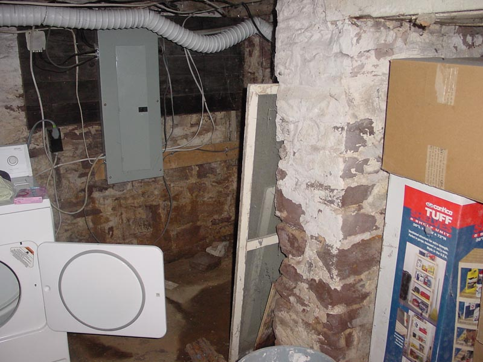

|  |
|
Is it piles of junk in a corner? Or is it a complex navigation path designed to break up the flow of the Main Hall? You decide! Other featurs to note: The Achilles heel for this house, the electrical service, is tastefully mounted in the background. Boxes and other materials are stored in the cubby. Free sculpture is visible on the floor. [ Look left at next to the washer | Back to by the stairs | Electric panel? | What's on the floor? | What are those boxes in the cubby there? ] |